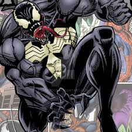
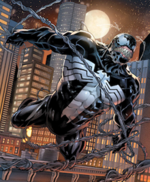
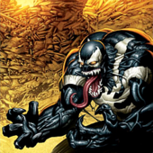
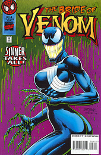

Venom Symbiote is a fictional character appearing in American comic books published by Marvel Comics, commonly in association with Spider-Man. The character is a sentient alien Symbiote with an amorphous, liquid-like form, who requires a host, usually human, to bond with for its survival. After bonding, the Symbiote endows its enhanced powers upon the host. When the Venom Symbiote bonds with a human, that new dual-life form refers to itself as "Venom". The Symbiote was originally introduced as a living alien costume in The Amazing Spider-Man #252 (May 1984) with a full first appearance as Venom in The Amazing Spider-Man #300 (May 1988).
The Venom Symbiote's first known host was Spider-Man, who eventually separated himself from the creature when he discovered its true nefarious nature. The Symbiote went on to merge with other hosts, most notably Eddie Brock, its second and most infamous host, with whom it first became Venom and one of Spider-Man's archenemies. According to S.H.I.E.L.D., it is considered one of the greatest threats to humanity, alongside Magneto, Doctor Doom, and Red Skull.
Comics journalist and historian Mike Conroy writes of the character: "What started out as a replacement costume for Spider-Man turned into one of the Marvel web-slinger's greatest nightmares. Venom was ranked as the 22nd Greatest Comic Book Villain of All Time in IGN's list of the top 100 comic villains. IGN also ranked Mac Gargan's incarnation of Venom as #17 in their list of "The Top 50 Avengers", while the Flash Thompson incarnation was ranked as #27. The character was listed as #33 on Empire Magazine's 50 Greatest Comic Book Characters.
Story Publication:
The original idea of a new costume for Spider-Man that would later become the character Venom was conceived of by a Marvel Comics reader from Norridge, Illinois named Randy Schueller. In 1982, Jim Shooter, Marvel's editor-in-chief at the time, sent Schueller a letter acknowledging Marvel's interest in the idea, which they ended up purchasing from him for $220.00.
Shooter came up with the idea of switching Spider-Man to a black-and-white costume, possibly influenced by the intended costume design for the new Spider-Woman, with artist Mike Zeck designing the black-and-white costume. Writer/artist John Byrne states on his website that the idea for a costume made of self-healing biological material was one he originated when he was the artist on Iron Fist to explain how that character's costume was constantly being torn and then apparently repaired by the next issue, explaining that he ended up not using the idea on that title, but that Roger Stern later asked him if he could use the idea for Spider-Man's alien costume. Stern in turn plotted the issue in which the costume first appeared but then left the title. It was writer Tom DeFalco and artist Ron Frenz who established that the costume was a sentient alien being that was vulnerable to high sonic energy during their run on The Amazing Spider-Man that preceded Michelinie's.
The Symbiote was first introduced as Spider-man's new black costume in The Amazing Spider-Man #252 (May 1984) as part of a story called "Homecoming!" The story takes place after Spider-man's return from the events of the miniseries Secret Wars, where he first obtains the black costume. The full first appearance of Venom is in The Amazing Spider-Man #300 (May 1988), after the Symbiote bonds with Eddie Brock.
Hosts:
Spider-Man:
The story of how Spider-man gets his new black costume is recounted in Marvel Super Heroes Secret Wars #8 (December 1984), in which writer Jim Shooter and artist Mike Zeck depicted the heroes and villains of the Marvel Universe transported to another planet called Battleworld by a being called the Beyonder. After Spider-Man's costume is ruined from battles with the villains, he is directed by Thor and the Hulk to a room at the heroes' base where they inform him a machine can read his thoughts and instantly fabricate any type of clothing. Choosing a machine he believes to be the correct one, Spider-Man causes a black sphere to appear before him, which spreads over his body, dissolving the tattered old costume and covering his body to form a new black and white costume. To Spider-Man's surprise, the costume can mimic street clothes and provides a seemingly inexhaustible and stronger supply of webbing.
During their run on The Amazing Spider-Man, writer Tom DeFalco and artist Ron Frenz established that the costume was a sentient alien Symbiote that was vulnerable to both fire and high sonic energy. It was in that storyline that the costume would envelop Peter Parker while he slept, and go out at night to fight crime, leaving Parker inexplicably exhausted in the morning. Parker had the costume examined by Reed Richards, who discovered that it was alive, and when Parker realized it was trying to permanently bond to Parker's body, he rejected it, and it was subsequently contained by the Fantastic Four. The Symbiote escaped and attacked Parker, who used sound waves from a cathedral's church bell to repel it.
Eddie Brock:
David Michelinie would later write the backstory of Eddie Brock as the alien's new host that would become the villain Venom, using the events of Peter David's 1985 "Sin Eater" storyline in The Spectacular Spider-Man as a basis for Brock's origin. Venom's existence was first indicated in Web of Spider-Man #18 (September 1986), when he shoved Peter Parker in front of a subway train without Parker's spider-sense warning him, though only Brock's hand was seen on-panel. The next indication of Venom's existence was in Web of Spider-Man #24 (March 1987), when Parker climbed out of a high story window to change into Spider-Man, but found a black arm coming through the window and grabbing him, again without being warned by his spider-sense. Venom made his cameo appearance on the last page of The Amazing Spider-Man #299 (April 1988), when he terrorized Parker's wife, Mary Jane Watson, and made his full appearance in The Amazing Spider-Man #300 (May 1988).
Spider-Man would confront him in the following issue, when Brock reveals that he was a Daily Globe reporter who worked on the Sin-Eater case, and that his career was ruined when it was discovered that the man Brock announced as the Sin-Eater was a compulsive confessor. Forced to eke out a living writing lurid stories for venomous tabloids, Brock blamed Spider-Man for his predicament. He took up bodybuilding to reduce stress. It failed to do so, and Brock sank into a suicidal depression. Seeking solace at the church where Spider-Man repelled the Symbiote, the Symbiote—sensing Brock's hatred for Spider-Man—bonded with the disgraced reporter. Brock took on the name Venom in reference to the sensationalistic material he was forced to traffic in following his fall from grace.
Over the years, as the Symbiote gained more intelligence and moved to additional human hosts, the name began to apply to the Symbiote as well as its hosts. As Venom, Brock fights Spider-Man many times, winning on several occasions. Venom repeatedly tries to kill Peter Parker/Spider-Man—both when the latter was in and out of costume. Thus Parker is forced to abandon his "black costume", which the Symbiote had been mimicking, after Venom confronts Parker's wife Mary Jane.
Venom escapes from the supervillain prison, The Vault, to torment Spider-Man and his family. The Symbiote is finally rendered comatose after being subdued by Styx's plague virus, and Eddie Brock is subsequently placed in Ryker's Island Prison. When the Symbiote recovers and returns to free Brock, it leaves a spawn to bond with Brock's psychotic serial-killer cellmate Cletus Kasady, who becomes Carnage. Meanwhile, Venom and Spider-Man fight on a deserted island, and Spider-Man strands Venom there after faking his own death. Soon after, however, Spider-Man brings Venom back to New York City in order to stop Carnage's killing spree. After being incarcerated once again, Venom is used to create five new Symbiotes, which are all paired with human hosts.
Eddie Brock returns as Venom in the continuation of volume one in his eponymous series. Art from Venom #161 (February 2018) by Javier Garron.
As well as helping Eddie Brock to seek continued revenge against Spider-Man, the Symbiote also aids Brock in a sporadic career as a vigilante. He and the Symbiote occasionally share a desire to protect innocent people from harm, even if it means working side-by-side with the hated Spider-Man. This is especially true when Venom combats the entity he believes to be his spawn, Carnage. When Spider-Man helps Venom save Brock's ex-wife Ann Weying, the two form a temporary truce, though this falls apart after Weying's suicide.
The Symbiote is temporarily stolen by U.S. Senator Steward Ward, who hopes to better understand his own alien infection by researching the Symbiote before it returns to Brock.[32] Now, however, it dominates its host, Brock, rather than vice versa. Eventually, Eddie Brock and the Symbiote go their separate ways as the Symbiote grows tired of having a diseased host and Eddie rejects its growing bloodlust, leading him to sell the Symbiote at a super villain auction.
The creature that would become Venom was born to a race of extraterrestrial Symbiotes, which lived by possessing the bodies of other life-forms. The parasites would endow their victims with enhanced physical abilities, at the cost of fatally draining them of adrenaline.[volume & issue needed] According to the 1995 "Planet of the Symbiotes" storyline, the Venom Symbiote was deemed insane by its own race after it was discovered that it desired to commit to its host rather than use it up. The Symbiote was then imprisoned on Battleworld to ensure it did not pollute the species' gene pool.[volume & issue needed]
The symbiote bonds with its new host, Lee Price, launching volume 3 of the Venom comic book series. The series ran for six issues total (Nov. 2016-April 2017). Eddie Brock is able to regain the Venom symbiote at the conclusion of the series, returning the Venom comic book title to volume 1 with issue #150.
The Venom Symbiote approaches Mac Gargan, the villain formerly known as Scorpion, and offered him new abilities as the second Venom. Gargan bonded with the creature, which would later give him an extra edge as part of Norman Osborn's Sinister Twelve. As the Avengers dealt with the rest of the Twelve, Spider-Man swiftly defeated Gargan, even with these additional powers, which Spider-Man suggests is attributed to the fact that Mac Gargan does not hate Spider-Man as much as Eddie Brock did.
Mac Gargan as the third host and the second Venom
Gargan later became a member of a sub-group of the Thunderbolts,[38] which was drafted by the Avengers to hunt down the members of the fugitive New Avengers. It was then revealed that he had been outfitted with electrical implants by the government to keep the Symbiote in check.
When in the Venom persona, Gargan retained very little of his original personality and was controlled almost completely by the Symbiote, which drove him to cannibalism. When the Symbiote was dormant in his body, he expressed nausea and fear of the organism. During a fight with "Anti-Venom" (Eddie Brock), he and his Symbiote were separated, and the Venom Symbiote was nearly destroyed. Blobs of it still existed in his bloodstream, however, so Osborn injected Gargan with a vaccine for Anti-Venom's healing powers, which restored the Symbiote by causing the remaining pieces of it to expand rapidly. Gargan dons a Scorpion battle armor over the Symbiote while it heals, causing him to become what Spider-Man calls "Ven-orpion" although when the Symbiote is fully restored it shatters the armor.[volume & issue needed]
After ingesting a chemical given to him by Norman Osborn, Venom transforms into a more human appearance similar to the Black-Suited Spider-Man. Osborn introduces him as The Amazing Spider-Man, a member of the Dark Avengers, while unveiling the team. After the Siege of Asgard, Gargan and most of the Dark Avengers were taken into custody. While being held on the Raft, the Venom Symbiote was forcefully removed from him, ending his run as Venom.
Flash Tomphson: On December 9, 2010, Marvel Comics announced a new "black ops" Venom owned by the government. This new Venom wa7s featured in a new series called Venom in March 2011. The birth of the new Venom can be seen in The Amazing Spider-Man #654 in February 2011. On January 28, 2011, the identity of "black ops" Venom was revealed to be Flash Thompson. Flash is hired by the government to be a special agent wearing the Venom Symbiote. Flash is only allowed to wear the suit for up to 48 hours, or risk a permanent bonding with the Symbiote. Along with the alien, Flash is equipped with a "Multi-Gun" designed to change into any type of gun Flash needs. The Government is also equipped with a "kill switch" designed to take Flash out if he loses control. Flash rejects the kill switch and later joins the Secret Avengers, Thunderbolts, Guardians of the Galaxy, and even becomes appointed by the Klyntar a Space Knight.
Lee Price: After being separated from Flash Thompson through unspecified means, the Venom symbiote happens upon a black market deal between Black Cat's gang and Tombstone's gang. He resorts to bonding with one of the men present, a discharged Army Ranger named Lee Price who was with Scorpion as part of Black Cat's gang. The weakened symbiote pleads with Price, attempting to convince him to become a hero like Thompson. Price ignores and overpowers it, intent on using it for personal gain as a new, wholly villainous Venom.[51]
Lee Price makes his way to Black Cat's hideout where Scorpion accuses him or botching the black market sale by causing the shoot-out. After having to keep the Venom symbiote from attacking Black Cat, Lee Price takes his leave from Black Cat's lair as Scorpion gets suspicious towards Lee. His departure is seen by some FBI Agents. Lee Price later gets attacked by Tombstone's minion Firebug. Upon defeating Firebug, a FBI Agent with a bazooka appears telling Lee Price that he is under arrest.
Lee Price eventually loses the symbiote when Eddie Brock and Spider-Man take him down and he is arrested by the NYPD.
While incarcerated at the New York Corrections Supermax Facility for Superhuman Incarceration, Lee Price is feared by most of the inmates and he even defeats three inmates in the prison's cafeteria when they try to kill him to boost their reputation. Lee swears to get out, reclaim the Venom symbiote, and plan revenge on those who have wronged him. Lee Price is later visited by his lawyer who tells him that two of the inmates he defeated had died in the infirmary and that Venom has resurfaced upon it being revealed in the news. At the courthouse, Lee Price's lawyer stated that Lee's actions as Venom were caused by the Venom symbiote while the opposing lawyer mentions about Venom still being at large. The judge then asked for some evidence to help with the trail. After the trial was over and Lee Price was released from prison and begins his plans to reclaim the Venom symbiote and begin his revenge on those who have wronged him.
Other Hosts:
Ann Weying first appears in The Amazing Spider-Man #375. She is Eddie Brock's ex-wife and a successful lawyer. Weying assists Spider-Man by sharing some of Brock's history. Later, she follows Spider-Man to the amusement park where Venom had Peter's (fake) parents. She confronts Brock and manages to convince him to end his feud. After Sin-Eater shoots Ann as part of a crusade against social injustice, Ann becomes She-Venom when the Venom Symbiote temporarily bonds with her to save her life. She-Venom lashes out against the men who had hurt her, and Brock becomes afraid for her (and of her) and compels the Symbiote to return to him. Ann is left distraught at her actions while bonded. Later Ann is arrested on a false charge as part of a trap for Venom. She manages to warn Brock who sends the Symbiote to her, allowing her to become She-Venom and escape custody. Some time later, Ann, traumatized by her experiences with Venom and the Symbiote, commits suicide after seeing Spider-Man pass by her window in a black costume, believing it is Brock returning for her.
Patricia Robertson: The story follows U.S. Army communication specialist Patricia Robertson. During a supply run to an Ararat Corporation owned outpost she discovers everyone at the installation dead except for one scientist. It is revealed that the Ararat Corporation is run by an alien colony of miniature spider robots led by an entity named Bob, that have infiltrated the American government. The Ararat Corporation has cloned Venom to facilitate the extermination of humanity, but the clone ravages its hosts. The clone is responsible for the death of the outpost crew.
Robertson finds an ally in the Suit, a mysterious individual made of the same miniature robots as Bob, revealed to have been accidentally brought to Earth by Reed Richards. The Suit modifies Robertson while she is unconscious to allow her to control the clone if it bonds with her. The Suit sabotages Wolverine, the clones favored host, forcing it to bond with Robertson. One of Bob's agents convinces Robertston to kill the real Venom to save humanity, causing her to free the incarcerated Venom. She and Venom fight, but Venom escapes. Bob remotely deactivates the technology allowing Robertson to control the clone forcing her to rely on willpower. Later, Robertson and Venom again fight, and Venom absorbs the clone. Venom decides to carry out the clone's mission given to it by the Ararat corporation. The series did not continue and the plot remained unresolved as of 2012. The Venom Symbiote would later regurgitate and expel the clone from its body, allowing it to bond with a teenager named Andrea "Andi" Benton. Taking the name Mania, Benton became Agent Venom's partner for a time.
Thats all. Thanks for your time!